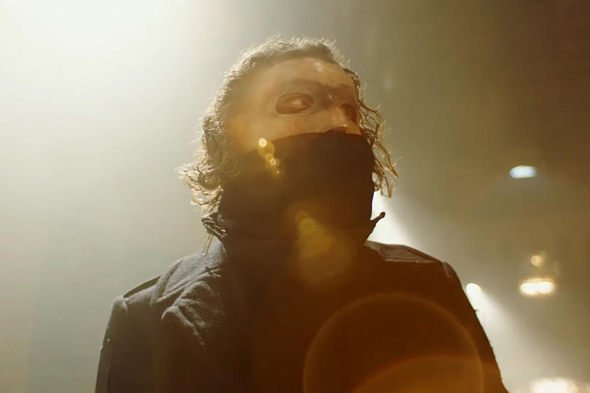

Oh, I'll never kill myself to save my soul
I was gone, but how was I to know?
I didn't come this far to sink so low
I'm finally holding on to letting go (x3)
I'm just weathering a rough patch
Another villain with an itch to scratch
Denial is the darkest when you live in a hole
Why does the Hell make you feel so cold?
Make a move and you pay for it
Pick a Lord and you pray to it
You're so demanding when you want the truth
But your stories don't read for me
Oh, I'll never kill myself to save my soul
I was gone, but how was I to know?
I didn't come this far to sink so low
I'm finally holding on to letting go
Indecision Overload
Keep a buckle on the Devil and your eyes on the road
Reaching out for the hand of God
But did you Think You'd Shake Your Own?
This Killing Field is all grown over
The Motherf*cker wants it wild
Go sew your oats in alphabetical order
The Anti-Antagonist is back in style
Myopic, Cannot See Straight
Dystopic, One Sin Too Late
You gotta lie if you want to believe
But your Bibles don't work on me
Oh, I'll never kill myself to save my soul
I was gone, but how was I to know?
I didn't come this far to sink so low
I'm finally holding on to letting... GO
Did you think you could win? And fill me in?
Did you think you could do it again? I'm not your sin
I was all that you wanted and more, but you didn't want me
I was more than you thought I could be
So I'm setting you free, I'm setting you free
You've Killed The Saint In Me
How Dare You Martyr Me?
You've Killed The Saint In Me
Oh, I'll never kill myself to save my soul
I was gone, but how was I to know?
I didn't come this far to sink so low
I'm finally holding on to letting go
You've Killed The Saint In Me
How Dare You Martyr Me? (x2)
